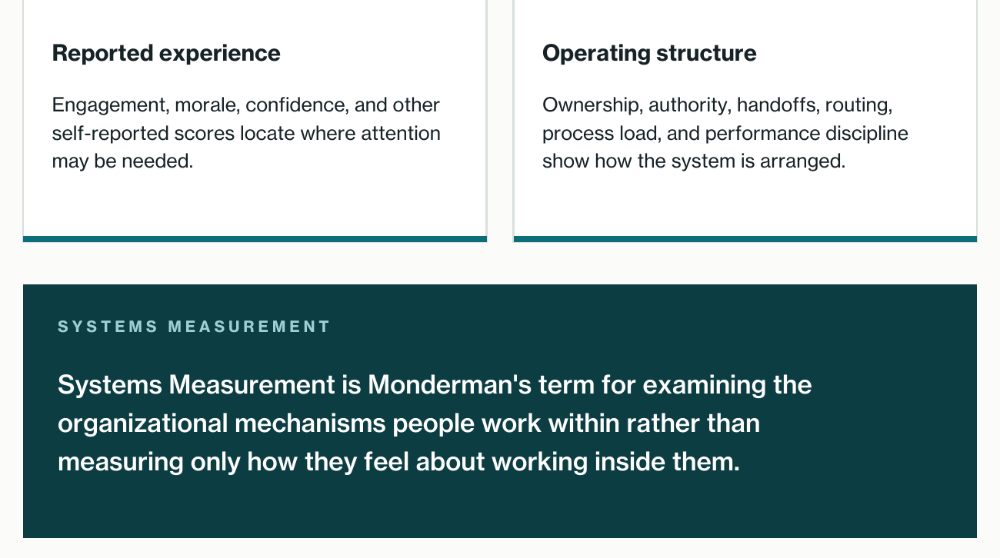
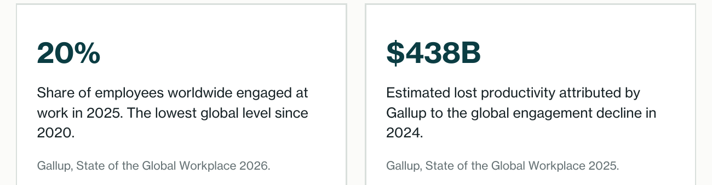
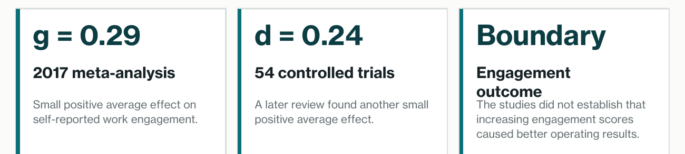
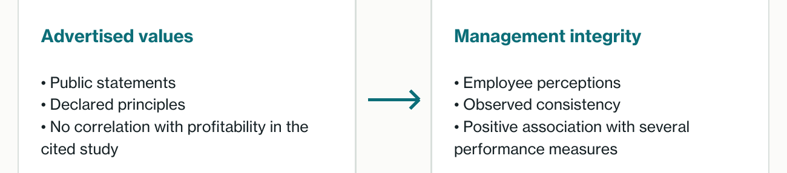
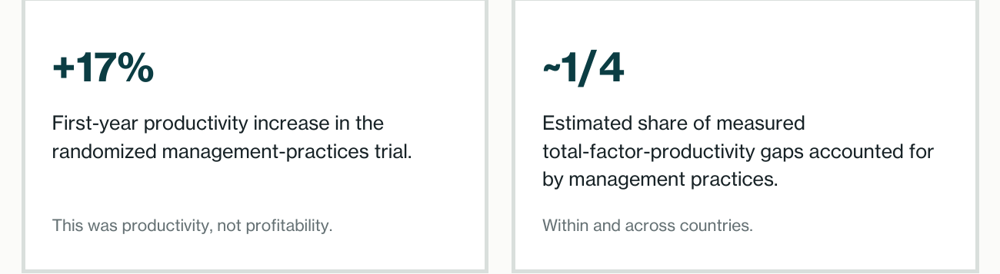
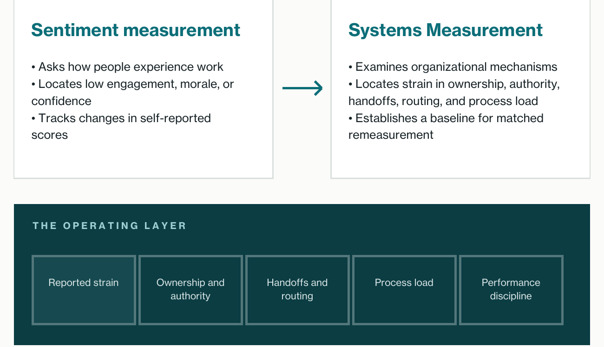
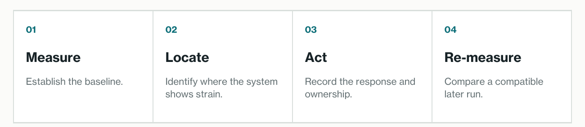
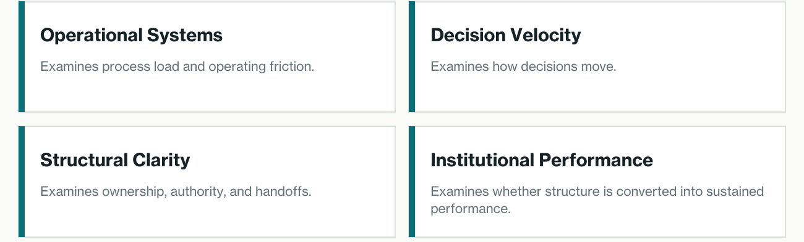
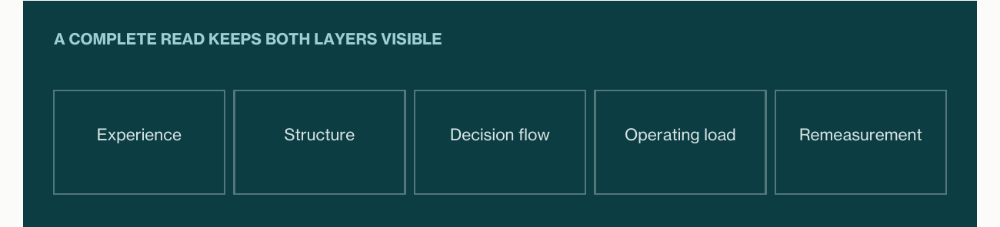

Experience is evidence. It is not the whole mechanism.
Sentiment measurement can show where people experience strain. A culture or sentiment score does not, by itself, identify the organizational mechanisms producing the condition.

The distinction is complementary. Sentiment information has value. It can locate reported strain. It was not designed, by itself, to identify the operating mechanisms beneath that strain. Systems Measurement examines that second layer.
The central contrast Sentiment measurement shows where people experience strain. Systems Measurement examines the organizational systems beneath that experience.
Global engagement rose, then fell in 2024 and 2025.

Organizations have measured employee sentiment at global scale for more than fifteen years. Global engagement rose substantially over the longer trend before falling in both 2024 and 2025. The measurement tools located the change in reported experience. The score alone did not identify which operating mechanisms sat beneath it.
What controlled trials show
Programs designed to increase engagement have been tested in controlled trials. A 2017 meta-analysis found a small positive average effect on self-reported work engagement. A later meta-analysis of 54 controlled trials found a similarly small effect. These studies evaluated engagement outcomes. They did not establish that increasing the score caused better operating results.

Stated values and operating practice are different evidence.
A study of corporate values found no correlation between advertised values and profitability. Employee perceptions of management integrity were positively associated with productivity, profitability, and other performance measures.

A separate research program measured management practices directly, including monitoring, targets, and accountability. Those practices were strongly associated with productivity, profitability, and firm survival. In a randomized trial, firms that adopted better management practices raised productivity by 17 percent in the first year. A nine-year follow-up found that a large and significant management-practice gap remained between treatment and control plants.

From reported strain to the system beneath it.

A low sentiment score can show where reported experience warrants attention. It cannot identify whether the condition is linked to unclear ownership, slow approvals, unstable handoffs, excess process load, or another operating mechanism. Those questions require evidence about the system itself.
Evidence boundary The studies cited here did not test Monderman’s instruments. They do not establish that Monderman changes performance. They support examining management practices and organizational mechanisms alongside sentiment.
Measure. Locate. Act. Re-measure.
Systems Measurement begins with a baseline. It reports where the organizational system shows strain. The organization acts. A later run measures the same system again.

What Monderman measures
Research on management practices examines monitoring, targets, accountability, and the routines through which work is managed. Monderman’s Diagnostics examine related organizational structures.

Depth Synthesis summarizes eligible runs of one Diagnostic. Cross-Lens Synthesis compares different Diagnostics and publishes a Composite Score only when the evidence is coherent enough to support one.
Why the distinction matters The two forms of measurement answer different questions. Used together, they distinguish a reported symptom from the mechanisms that may sit beneath it.
Measure experience. Examine mechanisms.
Sentiment reports experience. Systems Measurement examines organizational mechanisms. The distinction is not a verdict on either category. It is a boundary between two kinds of evidence.
Culture can affect performance, and operating conditions can shape culture. The defensible point is narrower: a culture or sentiment score does not, by itself, identify the organizational mechanisms producing the condition.

Organizations can continue to use sentiment measurement to locate reported strain. Systems Measurement adds a distinct question: what mechanisms are people working within, and where does that system show strain?
No instrument-validation claim The cited studies provide evidence about engagement interventions, corporate values, management integrity, and management practices. They did not test or validate Monderman’s Diagnostics.
Further reading Visit www.monderman.com/the-culture-trap.html for the short evidence page, the Platform Brief, and a sample report.